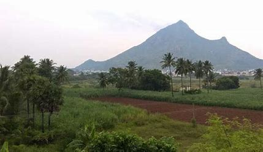
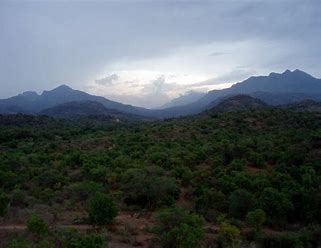

The Anamala or Anaimalai, also known as the Elephant Mountains, are a range of mountains in the southern Western Ghats of central Kerala (Idukki district, Ernakulam district, Palakkad district, Thrissur district) and span the border of western Tamil Nadu (Coimbatore district and Tiruppur district) in Southern India. The name anamala is derived from the Malayalam word aana and the Tamil word aanai, meaning elephant, or from tribal languages. Mala or Malai means 'hill', and thus 'Elephant hill'. Anamudi Peak (8,842 feet (2,695 metres)) lies at the southern end of the range and is the highest peak in southern India. The Palakkad Gap is the mountain pass which divides it from the Nilgiri Mountains. The northern slopes of the hills in Tamil Nadu now have coffee and tea plantations(especially around Valparai), as well as teak plantations of high economic value. The rest are mostly forests, of mainly two ecoregions-the South Western Ghats moist deciduous forests (mainly in Palakkad district and Idukki district of Kerala, as well as Tamil Nadu) and the South Western Ghats montane rain forests(mainly in Idukki district, Ernakulam district, Palakkad district of Kerala, Coimbatore district of Tamil Nadu).
Anaimalai Hills

| Anaimalai Hills | |
|---|---|
|  | |
| Highest Peak | |
| Peak | Anamudi, Kerala |
| Elevation | 2,695 m (8,842 ft) |
| Coordinates | 10°12′56.0″N 76°52′39.3″E |
| Geography | |
| Location | Tamil Nadu , India |
| Borders on | Tamil Nadu and Kerala |